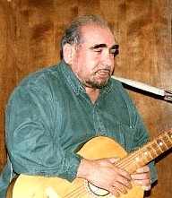

| В старой песенке поется: После нас на этом свете Пара факсов остается И страничка в интернете... (Виталий Калашников) |
||
|
Главная
| Даты
| Персоналии
| Коллективы
| Концерты
| Фестивали
| Текстовый архив
| Дискография
Печатный двор | Фотоархив | | Гостевая книга | Книга памяти |
||
|
Текстовый архив: А Б В Г Д Е Ё Ж З И К Л М Н О П Р С Т У Ф Х Ц Ч Ш Щ Ь Э Ю Я
| Гостевая книга | Дискография | ||
| Фотоархив: Изображ.на фото. Коллекция | |||
 Духовный< Леонид Самойлович. [США, штат Калифорния, Сан-Франциско] (род. 18.07.1938) [Автор (полный), Автор музыки (композитор), Автор стихов (поэт), Жанр: классическая АП, Жанр: народная (дворовая) песня, Жанр: романс, Жанр: шансон, Исследователь творчества, Организатор концертов, Продюссер, Руководитель клуба, творческого объединения]
Духовный Леонид Самойлович родился в Киеве 18 июля 1938 года. Жил в Киеве, Москве, Сан-Франциско. Учился, творил и защищал диссертацию в Москве (МИСИ, ВЗИСИ).
Первая песня (парафраз) была написана в 1952-1953 году. Писал песни на свои стихи, есть песни на стихи других поэтов. Написал порядка 200 песен. Наиболее известные — "Подол", "Вальс двоих", "Давай поговорим"; киевский цикл: "Евбаз", "Шулявка" и др.; пародии — перевод на украинский язык песен В.С. Высоцкого из к/ф "Вертикаль", "Радионя в горах"; романсы "Любимя, жду", "Я уж думал осень"; бытовые — "Geary", "Бессарабка — 2".
Окончил спецкурсы по АП (режиссура) при Министерстве культуры.
Один из организаторов 1-го киевского КСП "Костер" (руководил им с 1973 по 1992 год), один из семи координаторов "Союза КСП" (1979-86) — 1-го неформального объединения КСП СССР. Координировал регион Украина-Молдавия. Известный культуролог мирового движения КСП.
В бывшем СССР за свои произведения и деятельность неоднократно подвергался репрессиям, особенно со стороны КГБ.
Лауреат фестивалей АП (в частности Грушинского-76), член жюри региональных, союзных и международных фестивалей (Москва, Чимган, Минск, Рига, Ленинград, Киев, Оттава, Сан-Франциско и другие).
Паралельно с бардовской деятельностью, работал в Научно-Исследовательском Институте (НИИ) по разработке сверхпрочных материалов. В 1990-тые приватизировал компанию и возглавил ее.
С 11 сентября 1992 года жил в районе города Сан-Франциско, США.
Уже 19 октября 1992 года организовал один из первых и самых больших клубов авторской песни в США: Клуб Стихотворной Песни (КСП) "Полуостров" (San Francisco, Bay Area), которым руководил.
В рамках 2-го Открытого всеамериканского фестиваля "Полуостров-96" провел учредительное собрание объединения "Арка" (Ассоциация Русскоязычных Клубов и Авторов стихотворной песни USA), где был избран и.о. Президента.
Автор ряда статей и теоретических разработок по проблемам и истории АП, несколько из которых читал на лекциях в университетах (в частности — в Кемеровском, СССР и Стэнфордском в Калифорнии, США). Песни, статьи и стихи печатались в сборниках, буклетах, журнальных подборках, периодике.
В 1998 году вышел компакт-диск с 20 песнями, в 1999 году — аудиокассета. На многие песни оформлены авторские права. Были случаи, когда авторство восстанавливал по суду.
Организовывал концерты Евтушенко, Козакова, Городницкого, Кима, Шаова, Дулова, Розенбаума, Дольского и многих других (более 300 концертов).
Погиб 4 Мая, 2022 года, при пожаре в городе Маунтейн Вью, Калифорния. Писал до последних дней.
Альбом Леонида Духовного на Apple iTunes |
|
|
eMail : ldukh@yahoo.com eMail : ldukhovny@hotmail.com Телефон рабочий : (650) 494-3923 Факс : (650) 494-3923 |
- Есть аккорды
- Текст выверен автором
- Текст выверен по источнику